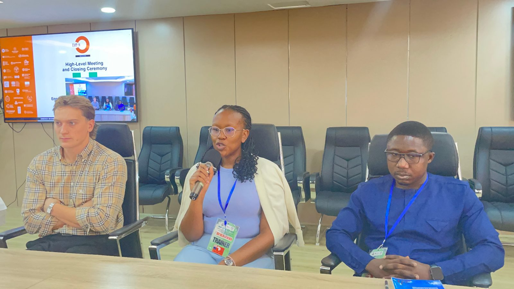
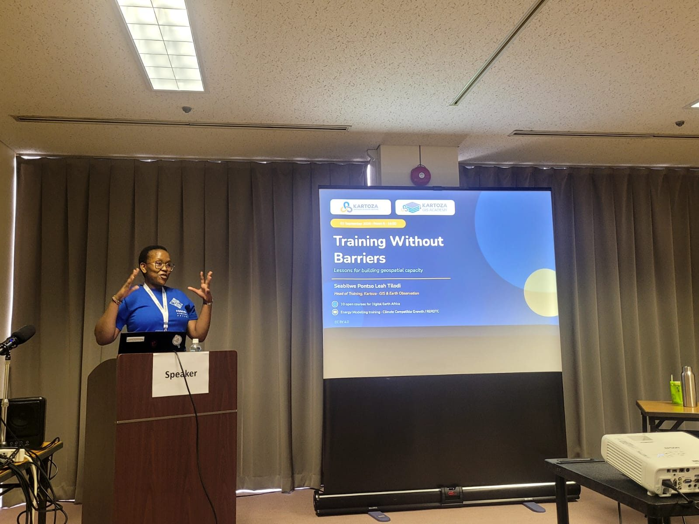
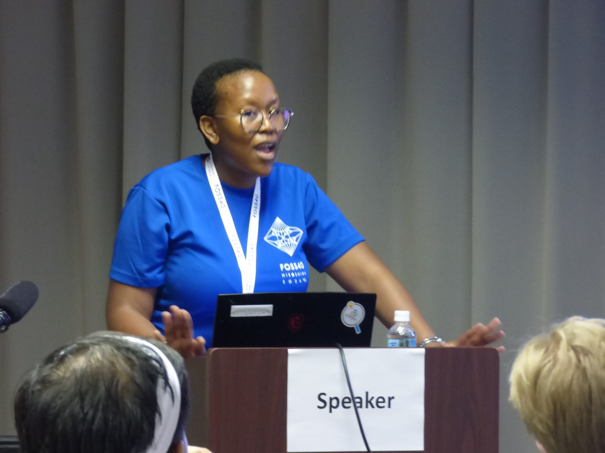
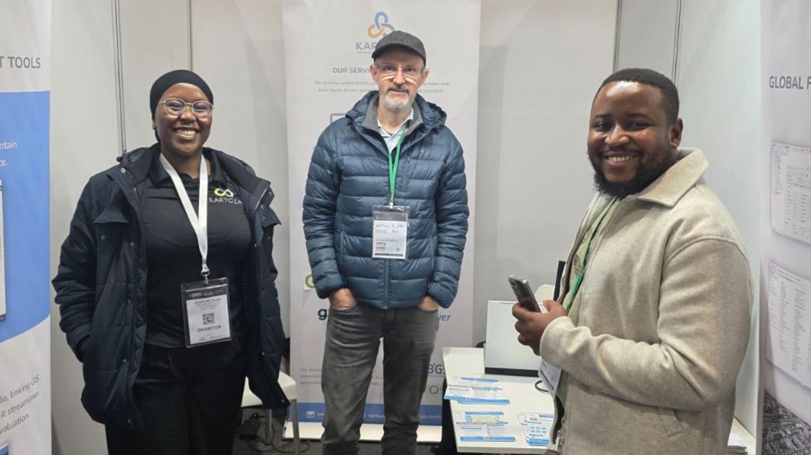
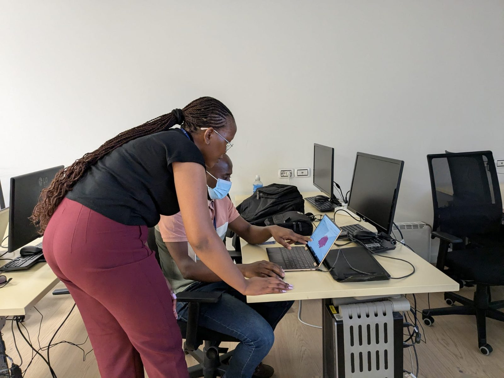
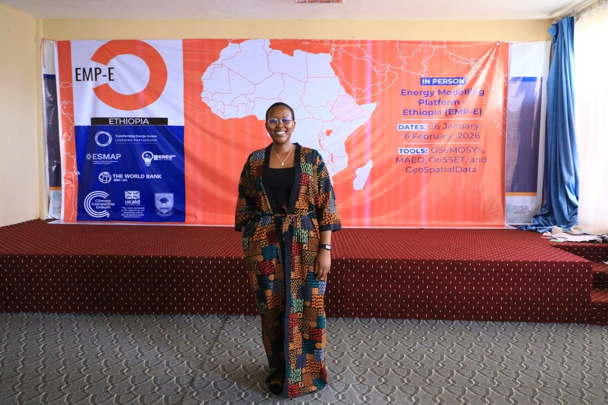
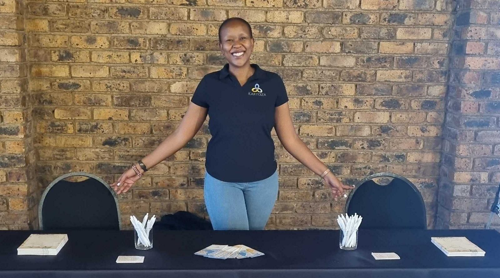
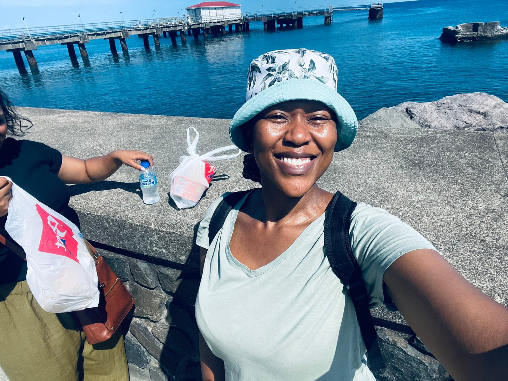

About me
A geospatial specialist who enjoys the teaching part as much as the data.
My story
I studied geology and then geography at the University of the Witwatersrand, and went on to an MSc in GIS and Remote Sensing there. Along the way I worked as a research assistant at the Gauteng City-Region Observatory, cleaning and georeferencing historical mining data.
I joined Kartoza, an open-source geospatial company, in 2020 as a GIS technician and specialist, and have led its training work since 2024. My projects usually follow the same path: get the data into shape, set up the platform that holds it, and train the people who will run it once we’ve left.
I’m most useful where data, systems and people meet. I’m now looking for roles in geospatial or data management, data governance, platform implementation and support, or learning, development and capacity building, inside or beyond GIS.
In the room
Training rooms, conferences and events.








Experience
- 2024 to now
Head of Training and Project Lead
Kartoza. Training strategy, course design and delivery. I lead training projects end to end, from scoping and quoting through delivery to technical support and handover, and I run the GIS Academy platform and training sales.
- 2020 to 2024
GIS Specialist and GISc Technician
Kartoza. Spatial data management, platform support, cartography and spatial analysis for international clients. Python scripting for geospatial workflows, CI/CD pipelines for automated build, test and deployment, and QGIS Desktop configuration, plugins and user support.
- 2018 to 2020
GIS Student Research Assistant
Gauteng City-Region Observatory. Data acquisition, cleaning and georeferencing of historical mine datasets.
Education
- MSc GIS and Remote SensingUniversity of the Witwatersrand
- BSc Honours, GeographyUniversity of the Witwatersrand
- BSc Geological SciencesUniversity of the Witwatersrand
Community
- OSGeo Charter MemberOpen Source Geospatial Foundation
- MentorEnergy Modelling Community
- InstructorKartoza internship programme